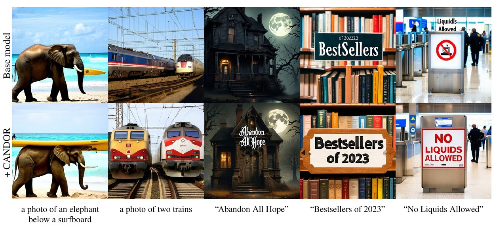

CANDOR: Contrastive Self-Denoising Rewards for Label-Free Text-to-Image Post-Training
1Seoul National University 2EverEx

Abstract
Post-training text-to-image generators with reinforcement learning usually relies on external reward models that need annotated preferences or auxiliary evaluators and are prone to reward hacking. We show that the generator's own denoising accuracy, used by a recent intrinsic reward, is a poor proxy for prompt fidelity. Within a same-prompt group, this absolute self-confidence is dominated by image complexity and ranks correct samples above incorrect ones near chance. We introduce CANDOR (Contrastive Alignment from Null-referenced Denoising lOg-Ratio), the log-ratio of unconditional to conditional denoising errors under shared noise probes, which measures how much the prompt helps the model denoise its own sample. It cancels prompt-independent difficulty that scales both errors and ranks the better of two same-prompt samples higher in 60% and 63% of pairs on compositional generation and text rendering. As the only Flow-GRPO reward for a flow-matching model, CANDOR improves text rendering, aesthetic and human-preference scores over the base model and a prior absolute self-confidence reward, with text-rendering and preference gains that stronger classifier-free guidance does not reproduce. On public Flow-GRPO adapters trained on external rewards, CANDOR further raises PickScore and ImageReward, so it can complement those rewards.
BibTeX
@article{lee2026candor,
title = {{CANDOR}: Contrastive Self-Denoising Rewards for Label-Free Text-to-Image Post-Training},
author = {Lee, Junhyeok and Kim, Byung-Hoon and Choi, Kyu Sung},
journal = {arXiv preprint arXiv:2611.25457},
year = {2026}
}